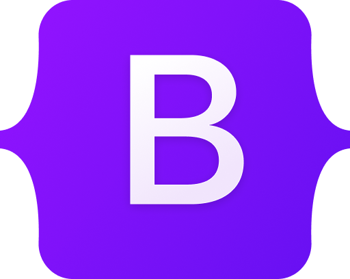
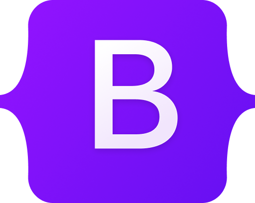

Welcome
I'm Muhammad Saiful Islam, driven by a passion for continuous learning and skill development stemming from my research background. Fueled by a deep interest in the transformative power of technology, I've evolved into a full-stack web developer.
I am always open to embracing new challenges and derive immense joy from solving problems with persistence, patience, and endurance. I firmly believe that remarkable achievements are within reach through collaboration and cooperation.
Why web development?
As a researcher, I've cultivated an innate ability for problem-solving, idea development, and collaborative growth. Additionally, I've always been fascinated by the inner workings of technology, particularly how it transforms data to impact global reach. This curiosity led me to pause and pursue web development at a coding school, a decision I've embraced wholeheartedly ever since. I'm continuously advancing in my technical skills through consistent practice and unwavering determination. My ultimate goal is to create innovative tools that drive both scientific progress and societal advancement. In a forward-thinking company, I aim to leverage my diverse skill set.
My Skills
My expertise as a web developer is centered around HTML, CSS, and JavaScript, encompassing both frontend and backend frameworks and libraries. I possess the capability to construct websites and applications comprehensively, handling everything from conceptualization and design to the implementation of interactive elements, server-side functionalities, and database integration.
Tech tools


 



Languages
Documentation
Testing and QA
Frontend libraries and frameworks
Backend and other libraries
Web services and databases
Native Apps
In my bucket list
AWS cloud computing, Python for web development, GraphQL, Next.js, Deno
Beyond profession
Outside of work, my greatest treasures are my family. I take immense pride in being a father to three wonderful sons and sharing my life with a loving wife. I also find joy in travelling, painting, and playing badminton.